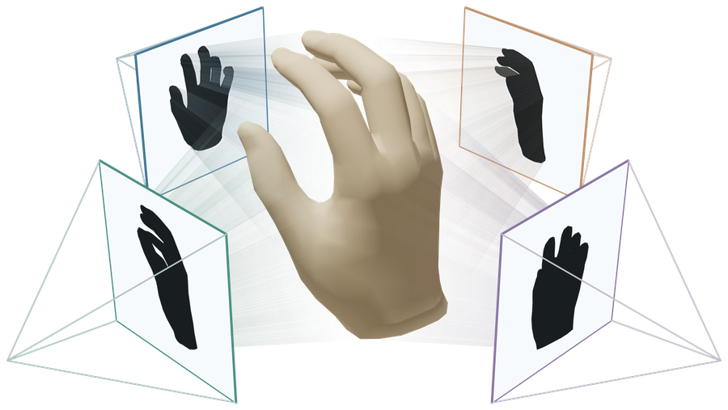
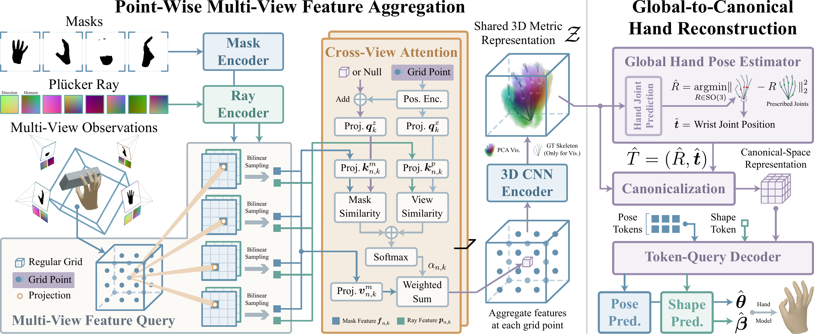
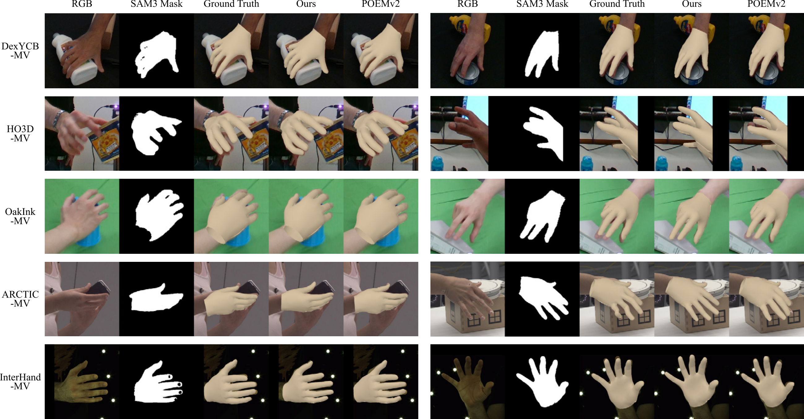
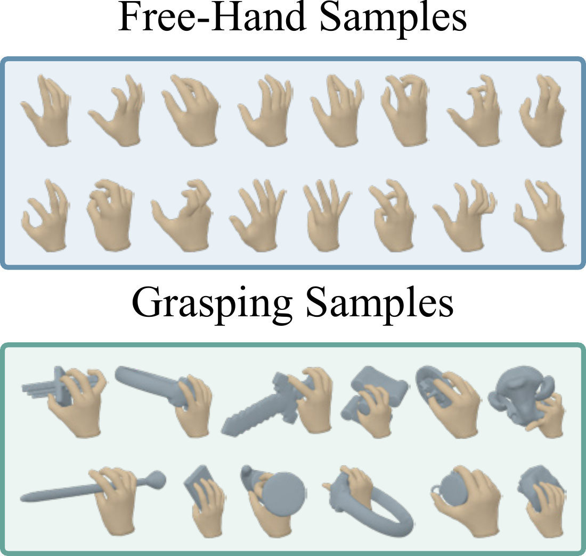
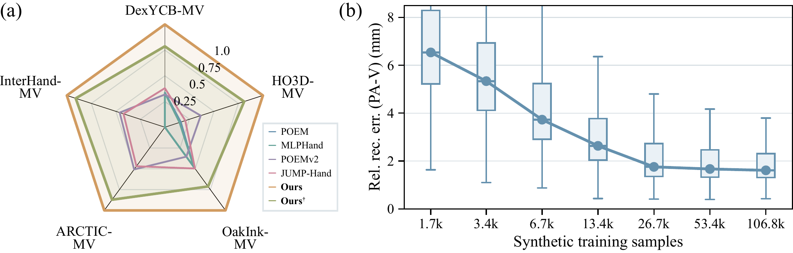
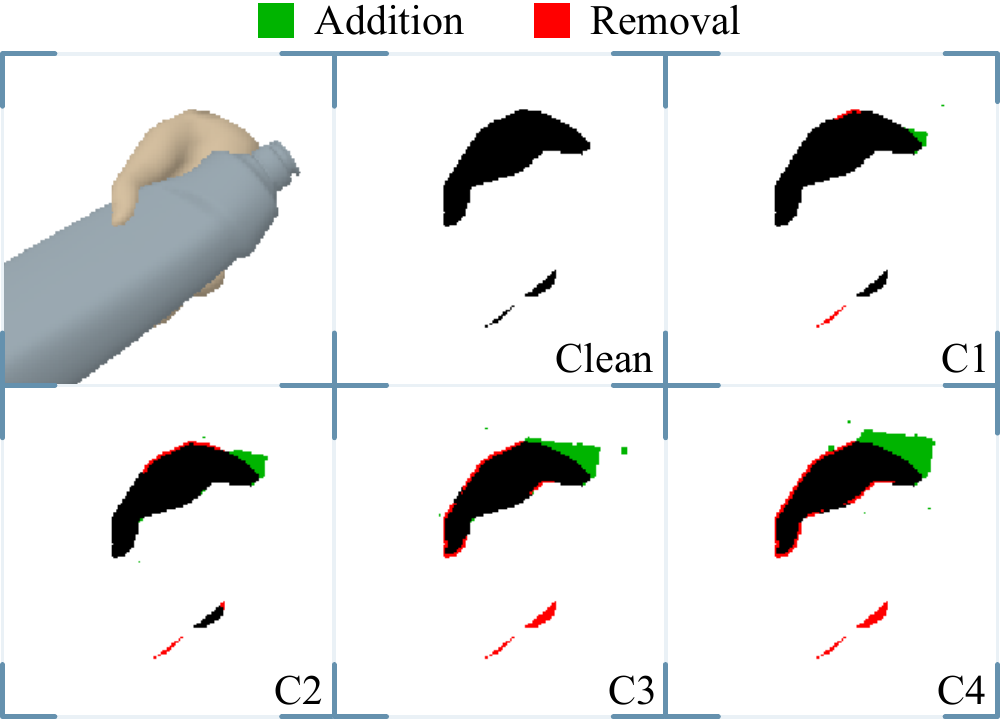

Synthetic-to-real 3D hand reconstruction
Hand in Silhouette
Synthetic-to-Real Multi-View Hand Reconstruction via Binary Masks
Future Lab, HEC Group
Learning hand geometry from synthetic data.
Reconstructing
real-world hands through binary masks.

† Annotation-oriented evaluation using reference-rendered masks; Table 1 in the paper.
The idea
Geometry is the common ground.
Binary hand masks connect synthetic geometry to real observations, reducing the appearance gap between the two domains.
Abstract
Calibrated multi-view hand reconstruction has advanced rapidly, yet the effectiveness of existing methods depends strongly on real captured data, which is costly to acquire, limited in hand-geometry diversity, and often affected by imperfect annotations. Synthetic data offers a scalable alternative with accurate supervision, but a substantial synthetic-to-real appearance gap hinders its use. To address this, we introduce Hand in Silhouette (SilHand), a calibrated multi-view hand reconstruction framework that operates on binary hand masks—obtainable at low cost either automatically or manually—to reduce the synthetic-to-real observation gap.
Rather than relying on RGB features for 3D lifting, SilHand projects metric 3D hypotheses into each view to query and fuse mask-ray evidence for hand reconstruction. This mask-centric formulation enables training on a large-scale synthetic dataset comprising 46.8k grasping poses and 60k free-hand samples, providing broad coverage of hand geometry while directly transferring to real captured hand geometry. Across five real-world benchmarks, SilHand improves relative reconstruction accuracy from 49.2% to 63.4% using masks rendered from reference hands. Moreover, reconstruction accuracy improves consistently as the synthetic training set grows, indicating that broader geometric coverage translates into better real-world performance. While achieving such diversity is difficult with real captured data, it becomes practical under our mask-centric formulation. Finally, SilHand remains robust under mask corruption, with reconstruction error increasing by at most 1.63 mm. Together, these results support binary masks as an effective interface for learning hand reconstruction from synthetic geometry.
01 / Method
From silhouettes to a complete hand.
Calibrated multi-view masks in.
Global pose, articulation, and
shape out.

-
01
Query the geometry
Project metric 3D grid points into each calibrated view. Query binary-mask features and Plücker-ray features at the projected locations.
-
02
Bring views together
Cross-view attention fuses complementary mask-ray evidence. A 3D CNN encodes this evidence in a shared spatial representation.
-
03
Decode the hand
Estimate the global hand pose, canonicalize the representation, and decode anatomically constrained articulation and MANO shape.
02 / Results
Synthetic training. Real-world evaluation.
Direct transfer to five benchmarks,
without real-data
fine-tuning.
The geometric benchmark uses masks rendered from reference hand annotations, preserving object occlusion. The comparisons below reproduce Table 1; they are distinct from the real-image segmentation evaluation further below.
| Dataset | Best RGB baseline | Baseline ↓ | SilHand ↓ | Error reduction |
|---|---|---|---|---|
| DexYCB-MVJUMP-Hand | JUMP-Hand | 5.45 | 2.07 | 62.0% |
| HO3D-MVPOEMv2 | POEMv2 | 7.63 | 2.79 | 63.4% |
| OakInk-MVJUMP-Hand | JUMP-Hand | 5.94 | 2.95 | 50.3% |
| ARCTIC-MVPOEMv2 | POEMv2 | 5.89 | 2.99 | 49.2% |
| InterHand-MVPOEMv2 | POEMv2 | 7.64 | 3.52 | 53.9% |
Clean masks are rendered from reference geometry. Baselines use RGB inputs. Error reduction is calculated from the rounded values reported in Table 1.
Reconstruction from real-image masks
SAM3 masks provide observations from captured RGB images.

An independent view
Agreement with held-out observations.
Reproject the reconstructed hand into a camera reserved exclusively for evaluation. SilHand uses masks from real images; visible object pixels are excluded when computing IoU.
| Dataset | POEMv2 | Annotation | SilHand |
|---|---|---|---|
| ARCTIC-MV | 79.0 | 80.1 | 81.9 |
| InterHand-MV | 81.8 | 83.9 | 83.1 |
03 / Synthetic data
More geometry.
Broader coverage.
106,800 synthetic hand configurations spanning free-hand articulation and hand–object interaction.
Hand pose, shape, interaction, viewpoint, and mask quality can be varied independently. Anatomical and collision-based filtering keeps the generated hand configurations geometrically valid.

Reconstruction improves as synthetic data scales.
From 1.7k to 106.8k samples, broader geometric coverage improves transfer across the five real-world datasets.

04 / Robustness
Working with imperfect masks.
Four corruption levels test increasingly noisy boundaries and incomplete silhouettes. C3 most closely matches SAM3 segmentation quality in the paper’s calibration.
≤ 1.63 mmMPVPE increase from clean masks to C4
across the five
benchmarks

Reference
Citation
@article{cui2026silhand,
title = {Hand in Silhouette: Synthetic-to-Real Multi-View Hand Reconstruction via Binary Masks},
author = {Cui, Leiyao and Ruan, Lecheng and Zhao, Zihang},
journal = {arXiv preprint arXiv:2611.16339},
year = {2026},
url = {https://arxiv.org/abs/2611.16339}
}